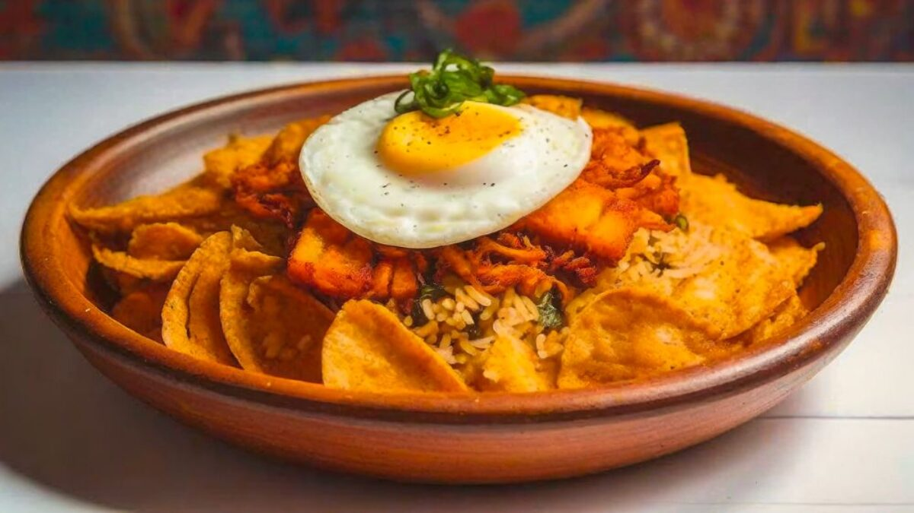
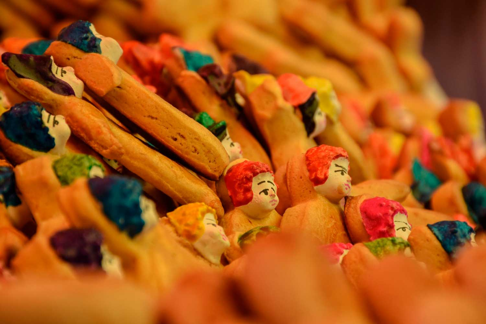

En cuanto a danzas nacionales, lastimosamente no sé bailar ninguna y pienso que es muy complicado decidir cuál es la más interesante entre todas, ya que cada una tiene su encanto. Sin embargo, si tuviera que nombrar cual me gusta más, estaría en un debate interno entre la Morenada ya que me gusta la historia y los colores vibrantes de los trajes. La Cueca, por la música y la elegancia que se necesita para bailarla. La Saya, debido a sus pasos tan movidos y enérgicos.
En cuanto a comida, la mayor parte gastronomía boliviana me encanta, desde la mayoría de platos que tienen charke, pasando por los ajís, terminando en los cuñapes y repostería crueceña. No voy a negar que hay platos que no me animaría a probarlos, como el locro o la sopa de Cardán.
Mi festividad favorita es Todos Santos. Desde muy pequeña tuve la tradición de poner la mesa para los seres que ya no nos acompañan en este plano terrenal, encontrandote con tus antepasados.
